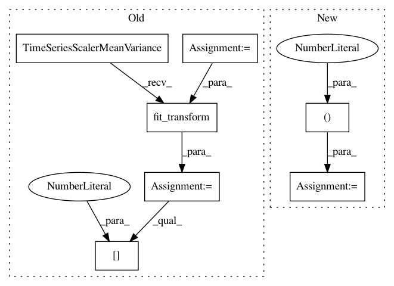

7fe99a818f297f195ff6000d4a6ffecc6e7db774,tslearn/docs/examples/metrics/plot_dtw.py,,,#,32
Before Change
numpy.random.seed(0)
n_ts, sz, d = 2, 100, 1
dataset = random_walks(n_ts=n_ts, sz=sz, d=d)
scaler = TimeSeriesScalerMeanVariance(mu=0., std=1.) // Rescale time series
dataset_scaled = scaler.fit_transform(dataset)
path, sim = metrics.dtw_path(dataset_scaled[0], dataset_scaled[1])
plt.figure(1, figsize=(8, 8))
// definitions for the axes
left, bottom = 0.01, 0.1
w_ts = h_ts = 0.2
left_h = left + w_ts + 0.02
width = height = 0.65
bottom_h = bottom + height + 0.02
rect_s_y = [left, bottom, w_ts, height]
rect_gram = [left_h, bottom, width, height]
rect_s_x = [left_h, bottom_h, width, h_ts]
ax_gram = plt.axes(rect_gram)
ax_s_x = plt.axes(rect_s_x)
ax_s_y = plt.axes(rect_s_y)
mat = cdist(dataset_scaled[0], dataset_scaled[1])
ax_gram.imshow(mat, origin="lower")
ax_gram.axis("off")
ax_gram.autoscale(False)
ax_gram.plot([j for (i, j) in path], [i for (i, j) in path], "w-",
linewidth=3.)
ax_s_x.plot(numpy.arange(sz), dataset_scaled[1], "b-", linewidth=3.)
ax_s_x.axis("off")
ax_s_x.set_xlim((0, sz - 1))
ax_s_y.plot(- dataset_scaled[0], numpy.arange(sz), "b-", linewidth=3.)
ax_s_y.axis("off")
ax_s_y.set_ylim((0, sz - 1))
After Change
-0.548, -0.567, -0.592, -0.622, -0.655, -0.690, -0.728, -0.764, -0.795,
-0.815, -0.823, -0.821])
s_y1 = numpy.concatenate((s_x, s_x)).reshape((-1, 1))
s_y2 = numpy.concatenate((s_x, s_x[::-1])).reshape((-1, 1))
sz = s_y1.shape[0]
path, sim = metrics.dtw_path(s_y1, s_y2)
In pattern: SUPERPATTERN
Frequency: 3
Non-data size: 7
Instances
Project Name: rtavenar/tslearn
Commit Name: 7fe99a818f297f195ff6000d4a6ffecc6e7db774
Time: 2020-04-28
Author: romain.tavenard@univ-rennes2.fr
File Name: tslearn/docs/examples/metrics/plot_dtw.py
Class Name:
Method Name:
Project Name: rtavenar/tslearn
Commit Name: e753bb1b0170eb3d6fabc93311c31f4094f1cdad
Time: 2020-01-22
Author: kushalkolar@gmail.com
File Name: tslearn/tests/test_serialize_models.py
Class Name:
Method Name: test_serialize_global_alignment_kernel_kmeans
Project Name: rtavenar/tslearn
Commit Name: e753bb1b0170eb3d6fabc93311c31f4094f1cdad
Time: 2020-01-22
Author: kushalkolar@gmail.com
File Name: tslearn/tests/test_serialize_models.py
Class Name:
Method Name: test_serialize_timeserieskmeans